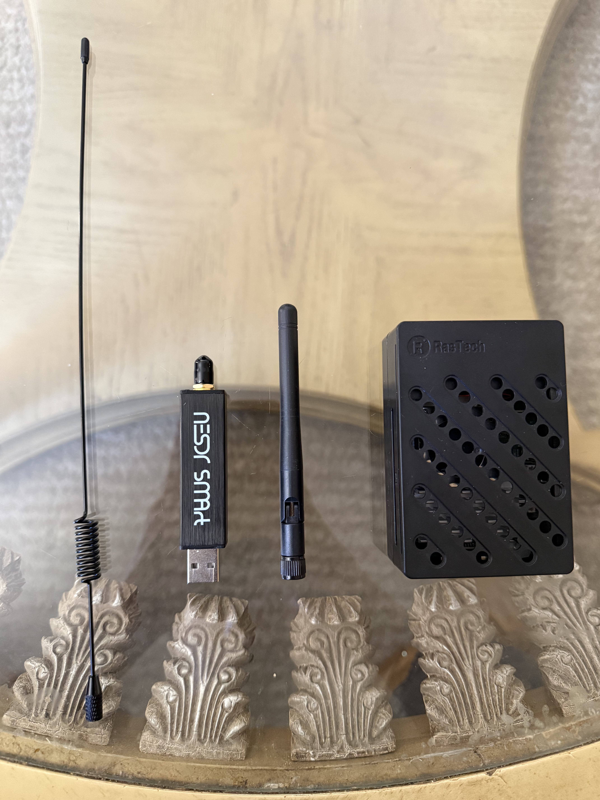
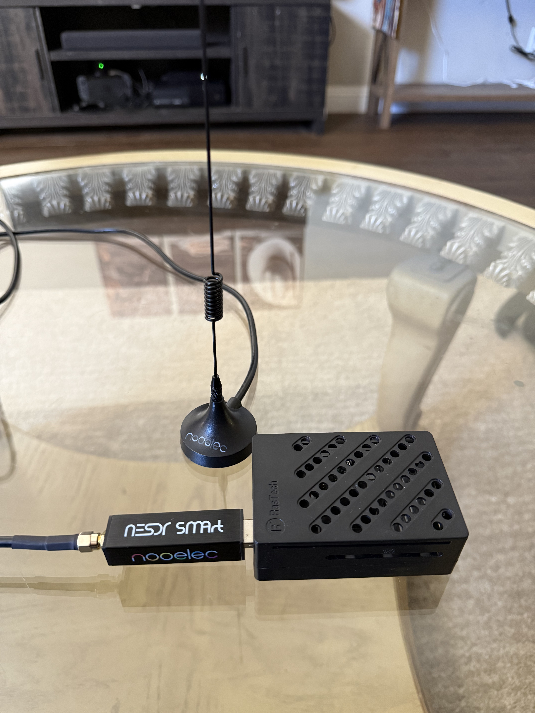

Overview
I built a working FM radio receiver entirely in software, replacing traditional analog hardware decoders with a $25 RTL-SDR dongle and custom code. Inspired by a signals and systems course, I wanted to explore how digital signal processing (DSP) can be used to transform raw baseband IQ samples into live audio using just a CPU. The project successfully executes the entire signal chain in real-time, including frequency shifting, lowpass filtering, FM demodulation, and de-emphasis. To push my understanding further, I later rewrote the entire system from scratch in C++, manually building the filter classes and delay lines to see exactly how the math works under the hood.
Problem & Motivation
Real-time DSP introduces strict performance bottlenecks, and my initial single-threaded architecture couldn't process the math fast enough to keep up with the hardware, resulting in sample drops and severe audio lag. I solved this by decoupling the system into a three-stage multithreaded pipeline with dedicated queues for hardware I/O, DSP processing, and audio callbacks. Later, I had to track down a persistent popping artifact in the audio. I isolated the issue to the polar discriminator defaulting to a complex zero at the boundary of data chunks, causing a massive phase jump. I fixed it by explicitly carrying the last sample and filter states across chunk boundaries to maintain mathematical continuity.
Screenshots


Technical Details
The system processes raw IQ samples at 2.4 MHz and decimates them down to 48 kHz audio. To avoid the hardware DC spike inherent to zero-IF receivers, I utilized an offset tuning technique, sampling 250 kHz off-target and digitally shifting the frequency back in software. For FM demodulation, I implemented a polar discriminator that calculates instantaneous frequency deviation by measuring phase changes between consecutive samples bypassing the need for a hardware Phase-Locked Loop (PLL). Finally, I applied an Infinite Impulse Response (IIR) de-emphasis filter with a standard 75 µs time constant to correct the transmitter's pre-emphasis and restore audio fidelity.
What I Learned
Building this gave me a highly practical intuition for digital signal processing that bridged the gap between classroom theory and real-world application. I learned how to architect real-time multithreaded data pipelines and properly manage statefulness across sample chunks. The C++ rewrite was particularly valuable; by manually implementing the filter history buffers, custom thread-safe queues, and the full atan2 discriminator math without relying on Python's scipy or numpy libraries, I gained a much deeper understanding of how DSP algorithms fundamentally operate at the memory level.
Next Steps
Moving forward, I plan to implement stereo FM decoding by extracting the 19 kHz pilot tone and the 38 kHz difference signal. I also intend to refactor the Python version's state management into a cleaner, object-oriented DSPProcessor class, expose station and gain controls via CLI arguments, and eventually build a live FFT waterfall display to visualize the RF spectrum dynamically.